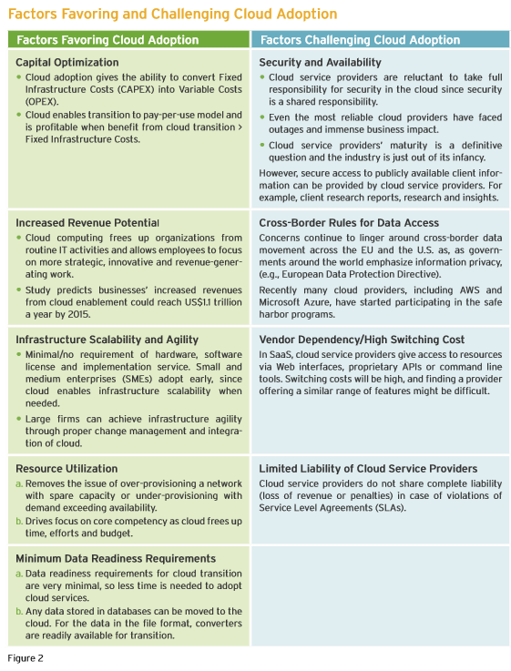

Cloud Computing Market Overview
Cloud Market Overview
The cloud marketplace is real; the cloud marketplace is now; and CSPs are well positioned to take advantage of this opportunity.
Enterprises are steadily shifting their IT spending to cloud services. While many are starting with hosted email and Web-based CRM applications, the adoption of Infrastructure-as-a-Service (IaaS) and Platforms-as-a-Service (PaaS) is increasing significantly.
Clearly, service providers able to offer cloud services that meet and satisfy the insatiable enterprise demand for cloud computing will reap sustained and predictable revenue and profitability.
Cloud Computing Market Size (2013)
Overall Spending in Cloud Market $131Bn
Overall Cloud Services Market $30Bn
SaaS $20-22 Bn
IaaS $6 Bn
PaaS $.5 Bn
Others/Misc $3 Bn
Why Need of Becoming CSP
Extra Source of Revenue Service Providers are finding revenues from their traditional services shrinking due to excessive competition. Value Added Services on top of their core services have provided them with the required extra revenue for many years but that is also leveling off. Cloud Computing offers itself as the candidate for the next wave of value added services providing support to their revenue and the bottom line.
Increasing Loyalty and Reducing Churn Cloud Computing offers multiple reasons for the existing customers to stay longer because once they start using some cloud based services from one service provider, their stickiness and barrier to move away both increase significantly.
When previously it was just a matter of signing up with the new service provider, with cloud computing in the portfolio, they have an added ‘migration cost’ of their data involved in order to move away and a potential downtime of critical services during switchover.
Differentiation of Services With many providers in the same market segment, cloud computing provides a way for service providers to differentiate their services from the competition.
Market Leadership Service Providers offering cloud computing are seen as driving the market and providing leadership. With hundreds of services coming in the cloud computing space, the trend is going to continue for many years to come.
Low Capex Offering Cloud Computing services is a low capex venture. With all larger software vendors offering service provider license agreements, the nature of business is basically pay as you grow with little CAPEX and OPEX directly related to revenue.
Monetization of Access Network Access Network is very expensive and more so for wireless service providers because of increasing spectrum license costs among others. Cloud Computing offers an added range of high value services to be offered over the same access infrastructure, offering better avenues of monetization of the same network.
Extension of Technology All Service Providers are technology driven industries and already have expertise in managing their core networks and running their operations uninterrupted and also have monitoring systems in place for their core services. Adding cloud computing to their offerings does not add any significant requirements for them in terms of expertise or equipment.
Higher Margins Cloud Computing comes with multiple avenues in adding value. They could be in providing managed services, monitoring of services, maintenance and upgrades of services, different levels of support and so on. Such personalized services allow higher margins than base services which are now increasingly commoditized.
Factors Favouring and Challenging Cloud Adoption
